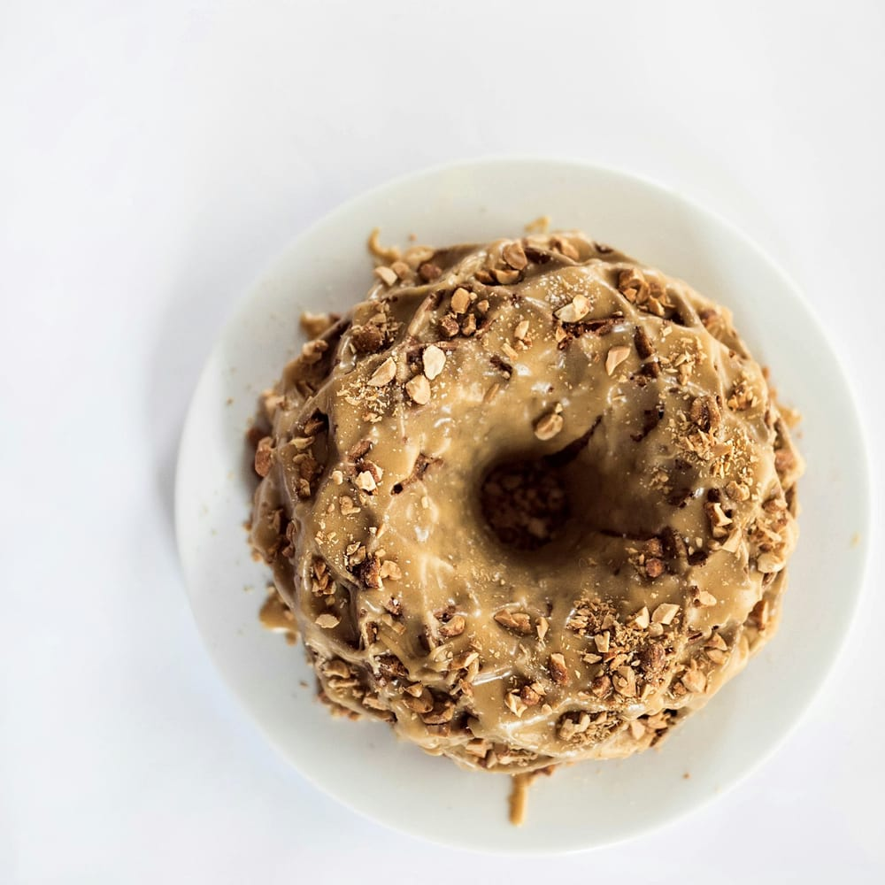

Maple bacon, start to finish

The bacon for the Maple Bacon Twist starts curing the day before we need it. On the morning of the bake we roast it with a little sugar until it is candied and brittle, then chop it into a crumble.
The twist itself is yeast-raised dough, cut and rolled by hand and fried until golden. It goes into a bowl of maple glaze while it is still hot, and the bacon crumble goes on before the glaze sets so it stays put.
It is sweet, salty and a little smoky, and people tend to have strong feelings about it either way. It comes back to the case as a weekly special whenever enough of you ask, so keep an eye on Instagram.